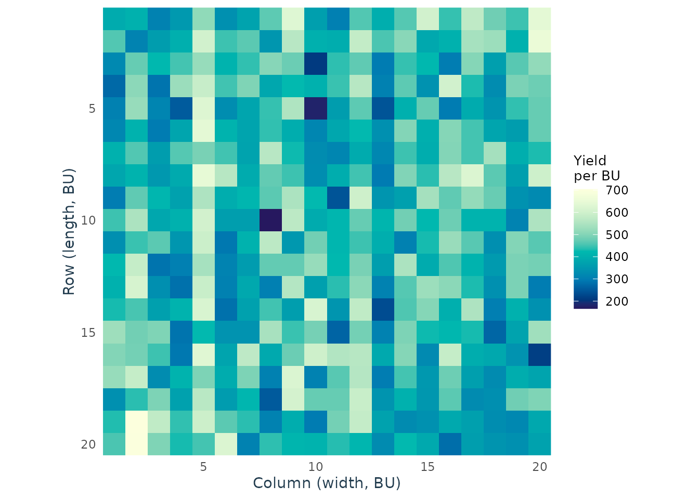
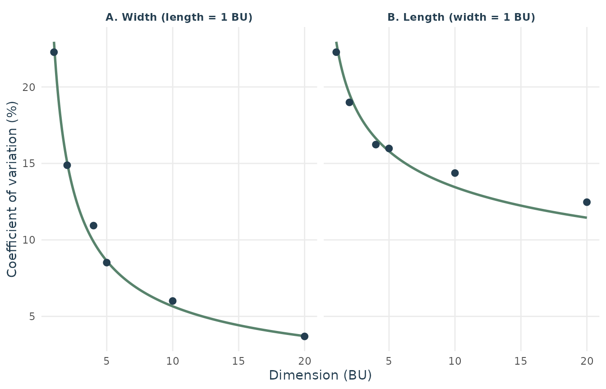
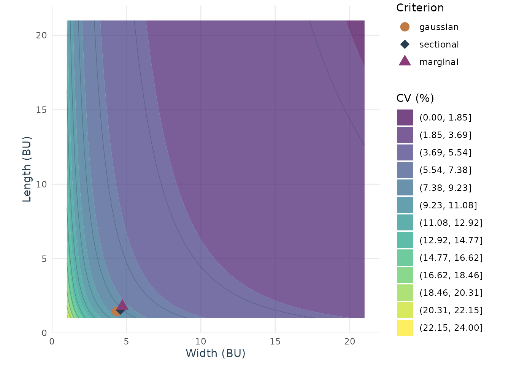
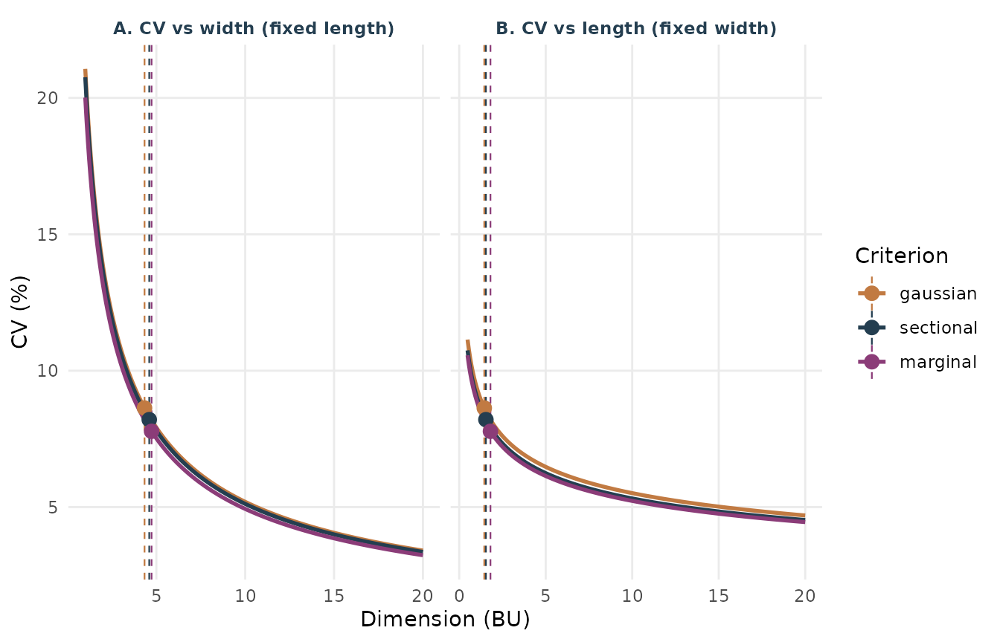
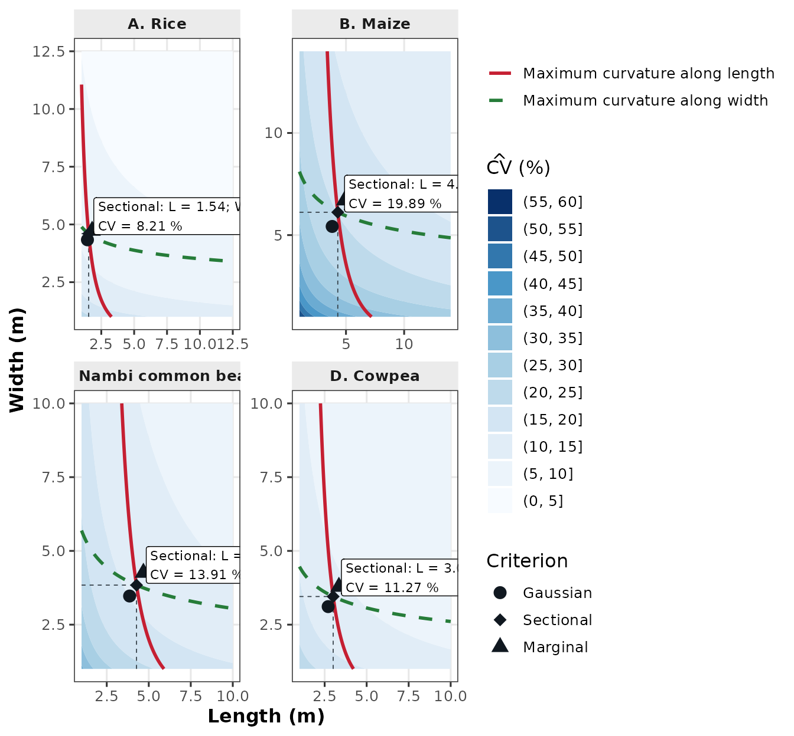

A uniformity trial is a field sown with a single treatment and harvested in small basic units (BU). Grouping adjacent basic units into larger plots shows how the coefficient of variation (CV) between plots falls as plots get wider and longer. plotsizing uses that information to estimate the width and length of the experimental unit.
This vignette walks through a complete analysis of the rice trial included in the package, and then compares the four example crops.
The data
example_trial() returns one of four uniformity trials
from Guanacaste, Costa Rica, as a numeric matrix: rows of the matrix are
rows of the field and columns are columns of the field. Each cell is the
yield of one basic unit of 1 m x 1 m.
rice <- example_trial("rice")
dim(rice)
#> [1] 20 20
describe_trial(rice)
#> n_ub rows columns mean std_dev cv_ub minimum maximum skewness
#> 1 400 20 20 429.62 95.68985 22.27314 166 704 0.2242222
#> excess_kurtosis
#> 1 -0.2775097
plot_trial_heatmap(rice)
To analyse your own trial, save it as a CSV file with a header row
(for example C1,C2,...) and no row-number column, and read
it with read_trial_matrix("my_trial.csv").
The complete analysis
analyze_uniformity_trial() runs every step: it
enumerates the plot configurations, fits the Smith (1938) variance law,
fits the CV surface and computes the solutions.
criterion = "all" returns the three criteria; the default,
"both", returns only the two curvature criteria.
result <- analyze_uniformity_trial(rice,
unit_width_m = 1, unit_length_m = 1,
criterion = "all"
)
result
#> Uniformity-trial analysis (plotsizing)
#>
#> Trial: 20 rows x 20 columns = 400 basic units of 1 x 1 m
#> Configurations: 35 (at least 2 plots each)
#> Smith (1938) b': 0.827
#> CV surface: CV = 22.95 * x^-0.608 * y^-0.232 (x = width, y = length, in basic units)
#>
#> Solutions (width, length in m; area in m2; CV in %):
#> criterion width length area cv
#> gaussian 4.34 1.45 6.28 8.63
#> sectional 4.60 1.54 7.10 8.21
#> marginal 4.73 1.81 8.54 7.78The printed result shows the main numbers. summary()
adds the descriptive statistics of the basic units and the standard
errors of the surface parameters.
summary(result)
#> Basic-unit yields:
#> n_ub rows columns mean std_dev cv_ub minimum maximum skewness excess_kurtosis
#> 400 20 20 429.6 95.69 22.27 166 704 0.2242 -0.2775
#>
#> Smith (1938) variance law:
#> method b_prime n_configurations
#> smith1938 0.827 35
#>
#> CV surface CV = a * x^-m * y^-n (nonlinear least squares):
#> Estimate Std. Error
#> a 22.954 0.6007
#> m 0.608 0.0216
#> n 0.232 0.0165
#> Standard errors are approximate: configurations share basic units.
#> Descriptive RMSE: 0.834 CV points
#>
#> Solutions (width, length in m; area in m2; CV in %):
#> criterion width length area cv
#> gaussian 4.34 1.45 6.28 8.63
#> sectional 4.60 1.54 7.10 8.21
#> marginal 4.73 1.81 8.54 7.78
#> Marginal target slope: 1 CV points per basic unitStep by step
The same analysis can be run one step at a time, which is useful to inspect or replace any of them.
Plot configurations
trial_configurations() enumerates every way of
partitioning the field exactly into rectangular plots with at least two
plots, and computes the CV of the plot totals for each one. The 20 x 20
rice trial allows 35 configurations.
cfg <- trial_configurations(rice)
nrow(cfg)
#> [1] 35
head(cfg[, c("width_ub", "length_ub", "area", "n_plots", "cv")])
#> width_ub length_ub area n_plots cv
#> 1 1 1 1 400 22.27314
#> 2 2 1 2 200 14.88316
#> 3 1 2 2 200 18.99070
#> 4 4 1 4 100 10.93494
#> 5 2 2 4 100 12.70863
#> 6 1 4 4 100 16.23085Smith’s variance law
fit_smith() fits Smith’s (1938) empirical law by
regressing the log of the variance per basic unit on the log of plot
area, weighting each configuration by its number of plots minus one. The
slope, b', measures soil heterogeneity: values near 0 mean
neighbouring basic units are highly correlated, values near 1 mean they
are nearly independent.
smith <- fit_smith(cfg)
smith$b_prime
#> [1] 0.8267914The CV surface
fit_cv_surface() fits
where x is plot width and y plot length,
both in basic units, and CV is in percent. The exponents m
and n measure how fast the CV falls along each direction.
In rice m is much larger than n: widening a
plot reduces the CV faster than lengthening it.
surface <- fit_cv_surface(cfg)
surface[c("a", "m", "n")]
#> $a
#> [1] 22.95414
#>
#> $m
#> [1] 0.6081412
#>
#> $n
#> [1] 0.2321577
plot_cv_profiles(cfg, surface)
The three criteria
Each criterion locates one point on the fitted surface and has a closed-form solution:
-
max_gaussian_curvature(): the point of maximum Gaussian curvature of the surface. -
simultaneous_sectional_curvature(): the point where the CV curve along the width and the CV curve along the length both reach their maximum curvature. In each direction this reproduces the classical modified maximum-curvature method. -
marginal_efficiency_2d(): the point where one more basic unit of width, or of length, reduces the CV bytarget_slopepercentage points.
rbind(
max_gaussian_curvature(surface$a, surface$m, surface$n),
simultaneous_sectional_curvature(surface$a, surface$m, surface$n),
marginal_efficiency_2d(surface$a, surface$m, surface$n, target_slope = 1)
)
#> criterion width length area cv K
#> 1 gaussian 4.335096 1.448599 6.279817 8.631981 0.02558784
#> 2 sectional 4.599877 1.542882 7.097068 8.205307 0.02535289
#> 3 marginal 4.730074 1.805704 8.541114 7.777921 0.02394040The three points lie close together on the surface, but they correspond to different plot areas.
plot(result)
plot(result, which = "sections")
Choosing the target slope
The marginal criterion depends directly on target_slope,
which is measured in CV percentage points per basic unit. A smaller
target asks for a smaller gain per added basic unit, so the plots become
larger. The curvature criteria do not depend on it.
slopes <- c(0.5, 1, 2)
do.call(rbind, lapply(slopes, function(s) {
cbind(
target_slope = s,
marginal_efficiency_2d(surface$a, surface$m, surface$n, target_slope = s)
)
}))
#> target_slope criterion width length area cv K
#> 1 0.5 marginal 6.893577 2.631620 18.141278 5.667744 0.01127140
#> 2 1.0 marginal 4.730074 1.805704 8.541114 7.777921 0.02394040
#> 3 2.0 marginal 3.245572 1.238996 4.021251 10.673745 0.02259968Four crops
crops <- c("rice", "maize", "common_bean", "cowpea")
solutions <- do.call(rbind, lapply(crops, function(crop) {
r <- analyze_uniformity_trial(example_trial(crop), criterion = "all")
data.frame(crop = crop, r$solution[, c("criterion", "width", "length", "area", "cv")])
}))
solutions
#> crop criterion width length area cv
#> 1 rice gaussian 4.335096 1.448599 6.279817 8.631981
#> 2 rice sectional 4.599877 1.542882 7.097068 8.205307
#> 3 rice marginal 4.730074 1.805704 8.541114 7.777921
#> 4 maize gaussian 5.423575 3.813904 20.684997 21.432466
#> 5 maize sectional 6.118153 4.294349 26.273482 19.891687
#> 6 maize marginal 6.701523 4.890805 32.775841 18.602560
#> 7 common_bean gaussian 3.470426 3.859820 13.395222 14.917291
#> 8 common_bean sectional 3.839966 4.271834 16.403699 13.914411
#> 9 common_bean marginal 4.259690 4.680916 19.939252 13.014736
#> 10 cowpea gaussian 3.111762 2.710341 8.433937 12.091338
#> 11 cowpea sectional 3.453603 3.006954 10.384826 11.269173
#> 12 cowpea marginal 3.784606 3.347826 12.670202 10.539115
Interpreting the results
- All calculations are made in basic units, with the CV in percent;
unit_width_mandunit_length_monly convert the final dimensions to metres. Because curvature depends on the scale of the axes, the solutions depend on that choice: a trial harvested in smaller basic units, or a CV expressed as a proportion, gives different physical plot sizes. - The solutions are continuous. They should be rounded to plot dimensions that can actually be laid out in the field, and checked against the precision required and the land available.
- The CVs of different configurations are computed from the same basic units, so they are not independent observations. Standard errors of the surface parameters are approximate.